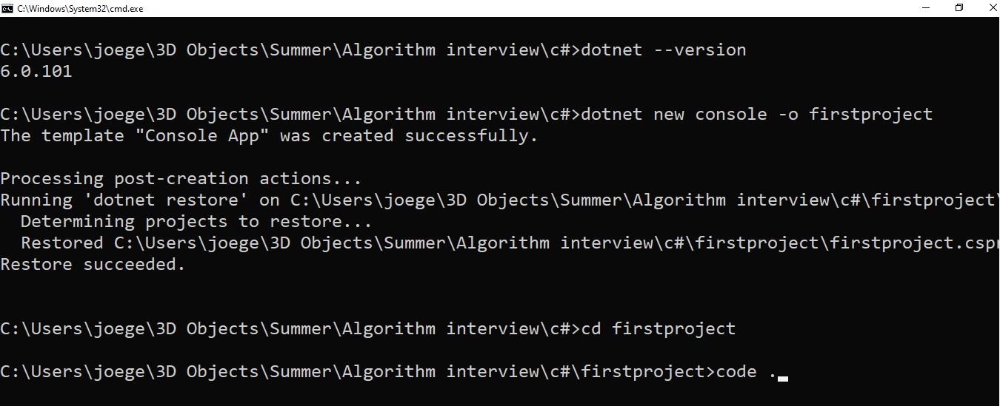
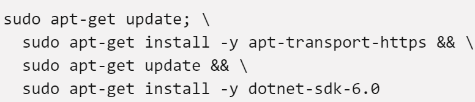

C# for Python developers
This is the curriculum for the first session that is part of the "kukujumuku" peer learning event that WARTBURG GDSC will be initiating this year. In this session student will be introduced to the c# programming language. The prerequisite for this session is an introduction to programming using the python programming language. It is exciting because once you already know one programming language it is fairly easy to learn a new language. In this course all of the coding examples will be done in both python and c#. The main goal is to allow python developers to transfer most of the programming concepts they learned in python over to c#. More time will be spent on explaining the difference in the syntax between the two languages. The expectation of this session is not to become an expert in C# but to understand the basic of the language.
Core Concept
C# Installation
One of the difficulties in getting started with c# is finding a better way to get it installed. Below are the popular ways of installing c# base on the operating system
Window

option 1
InstallThis is the best option and it is recommended for quickly installing c# without having to handle any terminal commands. The IDE comes with C# configured and installed
option 2
installThis is the second method for installing c#. Installing .NET SDK provides all of the libraries needed to develop a c# application along with the .NET runtime.
installThe vs code IDE is a ligtweight IDE that allow you to write c# code. It is similar to microsoft visual studio IDE but c# is not configure. You will have to install the c# package in vs code. After installing the c# package in vs code follow the step below to create your fist c# project. Make sure you are running the command from a directory.
Mac
option 1
InstallThis is the best option and recommended it is recommended for quickly installing c# without having to handle any terminal commands.The IDE comes with C# configured and installed
Linux
option 1
installThe microsoft visual studio IDE is not available for Linux. The .NET SDK can be install from the terminal in linux. Follow the step below to install .NET SDK on linux. Check that you running ubuntu as your linux version
 installThe vs code IDE is a ligtweight IDE that will allow you to write c# code. Similar to microsoft visual studio IDE but c# is not configure. You will have to install the c# package in vs code. After installing the c# package in vs code follow the steps below to create your fist c# project.
| Csharp | Python |
|---|---|
| Good for getting into unity game development | Use frequently for developing machine learning application.(Tensor Flow) |
| It is open source but controlled by microsoft | Open source with free distribution |
| well organized language but syntax has alot of symbols | simple language with less syntax. It is a complete masterpiece |
| Most C# applications can only run on the windows operating system | Python is cross-platform |
| Statically typed | Dynamically typed |
| good for building mobile applications using xamarin. Also a great language for building desktop app | Good for desktop app but is not strong in mobile development as compare to C# |
| Give you access to the .NET environment | Have alot of libraries for solving almost any programming problem |
| Not too popular in the data science community | One of the go to languages for data science. having libraries like pandas etc. |